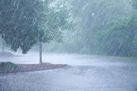
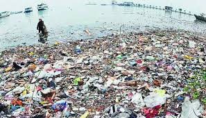
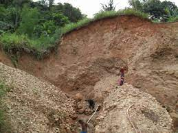
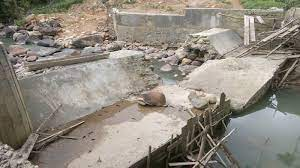

Saat ini, banjir yang terjadi di beberapa kawasan tidak hanya disebut sebagai bencana alam saja, tetapi juga dapat disebut sebagai tradisi. Hal tersebut karena peristiwa tersebut terjadi secara turun-temurun, layaknya sebuah tradisi.
Tradisi banjir ini biasa ditemui di wilayah Jakarta, Bogor, dan kota-kota besar. Namun, bukan berarti di desa-desa tidak ada tradisi banjir ini, wilayah pedesaan juga bisa saja menerima “kiriman” banjir pada tiap tahunnya.
Menurut Kamus Besar Bahasa Indonesia (KBBI), banjir adalah peristiwa terbenamnya daratan (biasanya daerah yang kering) karena volume air yang terus meningkat.
Bencana alam banjir ini dinilai telah merugikan banyak pihak dengan jumlah kerugian yang tidak main-main. Orang selalu berpikir bahwa banjir dapat disebabkan karena adanya hujan deras saja, padahal tidak, masih banyak penyebab terjadinya banjir yang justru akibat campur tangan dari manusia itu sendiri.
Berikut macam penyebab banjir :
1. Hujan

Hujan menjadi faktor utama dari penyebab terjadinya bencana alam banjir, terutama hujan deras. Curah hujan tinggi yang mempunyai debit air sekitar 20-100 mm/jam atau hujan lebat yang terjadi di berbagai wilayah di Indonesia, jelas dapat menyebabkan genangan air yang meninggi dan akhirnya banjir.
2. Pembuangan Sampah Sembarangan

Pembuangan sampah yang sembarangan ini secara tidak langsung berhubungan dengan penyebab banjir yang pertama, yakni hujan. Hal tersebut karena air hujan tidak bisa mengalir di sungai jika sungainya terdapat banyak sampah sehingga air hujan tersebut menjadi meluap ke daratan.
3. Erosi dan Sedimentasi Tanah

Erosi adalah proses pengikisan permukaan bumi yang disebabkan banyak hal, salah satunya adalah air mengalir. Sementara itu, sedimentasi adalah proses pengendapan benda padat karena pengaruh gaya yang besar. Dalam hal ini, pengendapan benda padat tersebut adalah tanah.
4. Keadaan Tanah Dan Tanaman
Umumnya tanah atau daratan akan menyerap air hujan, apalagi jika daratan tersebut ditumbuhi oleh banyaknya tanaman yang mempunyai daya serap air tinggi. Namun, apabila daratan tersebut tertutup oleh semen, paving, hingga aspal, tentu saja tidak dapat menyerap air hujan sama sekali.
5. Rusaknya Bendungan dan Saluran Air

Sudah banyak pemukiman penduduk yang mengalami banjir akibat dari rusaknya bendungan dan saluran air. Misalnya adalah di banjir di Padang yang selain akibat dari curah hujan tinggi, juga dipicu oleh rusaknya bendungan Irigasi Kasang II Sikayan yang terletak di Kelurahan Balai Gadang pada September 2021 lalu.
Apabila bendungan dan saluran air rusak, tentu saja tidak dapat menampung tingginya curah hujan yang datang, sehingga akan meluap ke daerah daratan.